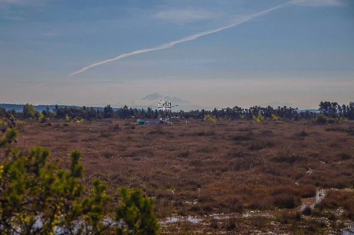
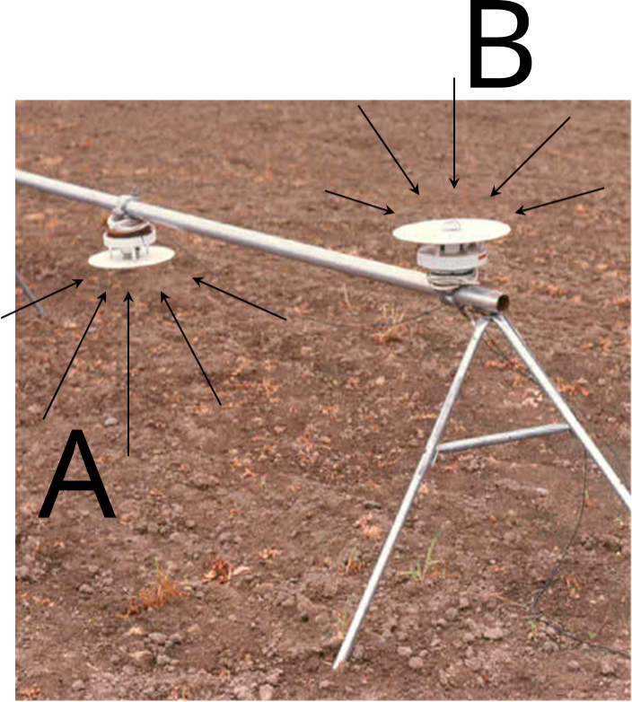
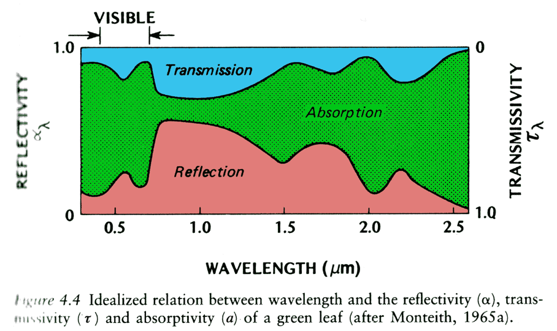
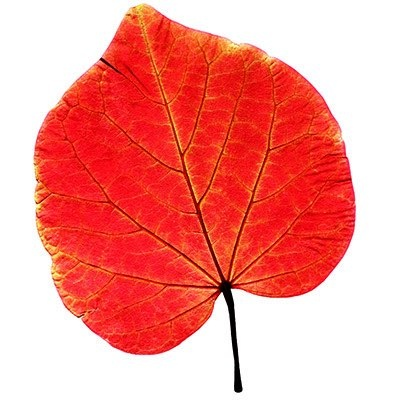
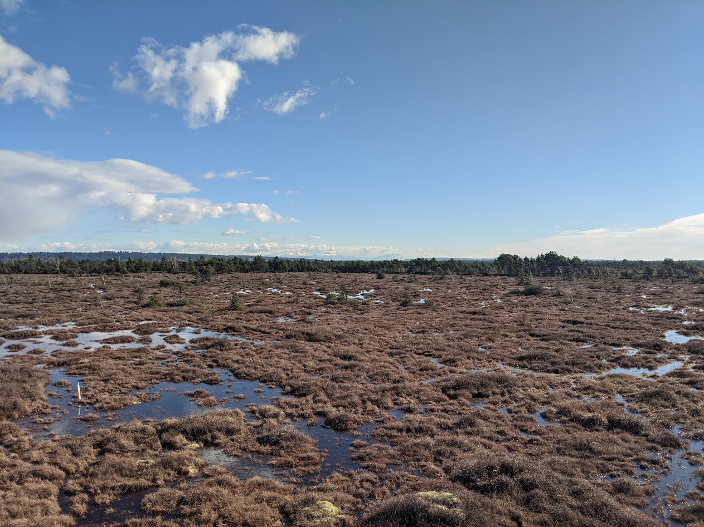

| θ | Rs | |
|---|---|---|
| 0° | 1.00 I0 | |
| 23.5° | 0.92 I0 | 8 % less |
| 50° | 0.64 I0 | 36 % less |
| 80° | 0.17 I0 | 83 % less |
Surface Geometry and Albedo
How incoming radiation interacts with surfaces
Learning Objectives
- Describe how is solar radiation distributed globally.
- Understand what happens when solar radiation reaches the ground or objects.
- Describe the process of reflection
- Reflectivity and surface albedo
- Examples of controls on surface albedo.

Surface geometry and albedo
The reflectivity of water greatly changes depending on the sun’s positing
Temporal and spatial variation
Each of these factors effects incoming short-wave radiation:
- The Earth is a sphere (latitude)
- The Earth is tilted on its axis (seasons)
- The Earth rotates (time of day)
- The Earth has an atmosphere (absorption & scattering)
- The Earth’s surface is not flat
Defining the Solar Zenith
The local solar zenith (\(\theta\)) is the inverse of the local sun angle (\(\theta = 90 - sun\:angle\)). It varies globally as a function of season (solar declination) and locally as a function of latitude and time of day.
- At solar noon: the \(\theta\) reaches its daily minimum
\[ \theta = Latitude - Solar\:Declination \qquad(1)\]
- At sunrise/sunset the \(\theta = 90 ^{\circ}\)
- At other times of day it will fall between these values
- You can use this solar calculator time/date & location
Latitude
The effect of latitude is most obvious at the equinoxes, when Sun is overhead at the Equator.
Irradiance (at top of atmosphere) follows the Cosine law law of illumination:
\[ R_s = R_p cos(\theta) \qquad(2)\]
Seasons

Effect of seasons - Earth’s tilt and orbit
Season: Average daily input
- The tropics have high input (on average)
- Less seasonal variation
- Higher latitudes have high input (on average)
- Highest summer values
Time of Day
The local solar zenith (\(\theta\)) varies through the day as the earth rotates.
Diurnal Variation
With no clouds this gives a simple daily symmetry, like a sine curve.

Irradiance at Burns Bog (iClicker)
Which of these answers explains (in part) why observed incoming short-wave radiation at the Burns Bog station on June 29th, 2021 shown on the previous slide was less than the solar constant (\(I_0\))?
- A Reflection of solar radiation by clouds
- B Spreading of the solar beam (cosine law of illumination)
- C Both A & B
Recall
Radiation Balance: radiation (of wavelength \(\lambda\)) can interact with an object in three ways:
- Absorption \(a_{\lambda}\)
- Transmission \(\tau_{\lambda}\)
- Reflection \(\alpha_{\lambda}\)
- For short-wave radiation, we use the term Albedo
\[ a_\lambda + \tau_\lambda + \alpha_\lambda = 1 \qquad(3)\]
Key Terms
Irradiance: flux density of incoming shortwave radiation on receiving horizontal surface (W m-2)
Reflectance: flux density of reflected shortwave radiation the surface (W m-2)
Albedo: proportion of irradiance that is reflected (unitless)
Measuring Albedo (iClicker)
Which instrument in this photo (A or B) would you use to measure reflectance?

Observations from Burns Bog
Spectral Reflectivity \(\alpha_{\lambda}\)
Leaves, soils, and rocks all have distinctive features.
- For opaque objects (e.g., rocks and soils) the spectral absorptivity is:
\[ a_{\lambda} = 1 - \alpha_{\lambda} \qquad(4)\]
- For transparent objects (e.g., leaves and water) the spectral absorptivity is:
\[ a_{\lambda} = 1 - \alpha_{\lambda} - \tau_{\lambda} \qquad(5)\]
Spectral Reflectivity \(\alpha_{\lambda}\) of Soil
Reflectivity of soil will vary by \(\lambda\) and depend upon its specific composition
- Sand, silt, vs. clay
- Organic content
- Water content
Spectral Reflectivity \(\alpha_{\lambda}\) a Leaf

Spectral Reflectivity \(\alpha_{\lambda}\) a Leaf
In the PAR region, \(\alpha_{\lambda}\) and \(\tau_{\lambda}\) are small making \(a_{\lambda}\) large.
- In the NIR region, the opposite is the case
- The leaf gets rid of radiation that might cause it to get too warm
- The small peaks in \(a_{\lambda}\) and \(\tau_{\lambda}\) at 0.55 \(\mu m\) account for the green color
In the fall leaves change color – WHY?
Test your knowledge (iClicker)
Which leaf has the highest spectral reflectivity at λ = 0.55 \(\mu m\)?


Spectral reflectivity of leaves
Albedo
The albedo (\(\alpha_{SW}\)) is calculated as the fraction of incident solar radiation reflected by a surface. Albedo is affected by:
- Angle of incidence
- Plant species
- Leaf development
- Surface wetness
- Surface roughness

Albedo of natural surfaces
- Lowest \(\alpha_{SW}\) (best absorbers)
- Open water, organic soils, coniferous forest
- \(\alpha_{SW} \approx\) 0.03 to 0.15
- Open water, organic soils, coniferous forest
- Intermediate \(\alpha_{SW}\)
- Deciduous forest
- \(\alpha_{SW} \approx\) 0.15 to 0.2
- Agricultural crops
- \(\alpha_{SW} \approx\) 0.2 to 0.25
- Deciduous forest
- Highest \(\alpha_{SW}\) (poor absorption)
- Snow, ice, dry light soils, desert sand
- \(\alpha_{SW} \approx\) 0.35 to 0.95
- Snow, ice, dry light soils, desert sand
Test your knowledge (iClicker)
Which system (A or B) has the higher albedo?
Albedo of snow-covered surfaces
Even snow-covered boreal forests have relatively low albedo due to their sides being bare.
Albedo of crops and forests

Take home points
- How does Earth’s geometry, rotation and planetary motion affect the distribution of short-wave irradiance in time and space?
- The reflectivity of soils and vegetation depends greatly on the wavelength of the radiation - giving objects distinct colors and spectral ‘signatures’ useful for remote sensing.
- Albedo = Outgoing reflectance / Incoming irradiance. Key control in the climate system.